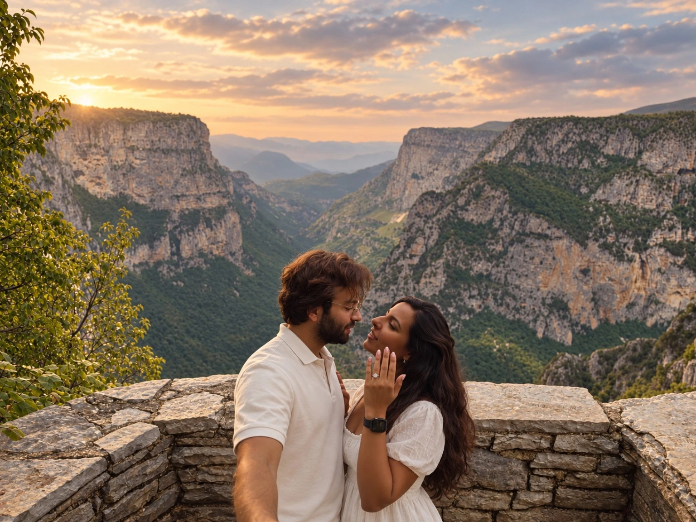

גל וירין
אנחנו מתחתנים
ונשמח שתבואו לחגוג איתנו.
יום ראשון
קבלת פנים בשעה
בית - חלל אירועים אורבני
התעשייה 10, רעננה
מפה וניווט
עד שניפגש
ימים
שעות
דקות
הגיע הזמן לחגוג אהבה
פרטי הגעה
בית - חלל אירועים אורבני
התעשייה 10, רעננה
חניה
החניון ממול לאולם, אנא קחו עמכם את כרטיס החנייה להחתמה אצל המאבטח ביציאה מהאירוע.
יום ראשון · 21.02.2027
קבלת פנים ב־